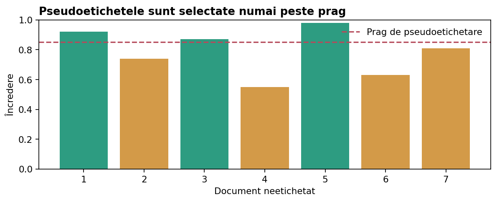

Metode hibride și învățare semisupervizată
Combinarea clusteringului, temelor și pseudoetichetelor cu un clasificator.

Clustering ca sursă de caracteristici
Un document poate primi un cluster sau o listă de distanțe până la centre. Aceste valori pot fi adăugate la TF-IDF pentru un clasificator. Însă o etichetă de cluster nu este o categorie semantică verificată și nu trebuie tratată automat ca adevăr.
Dacă înveți K-Means pe întregul set înainte de cross-validation, folosești informație din foldurile de validare în preprocesare. Integrează transformarea în Pipeline ori învaț-o în fiecare fold.
Teme latente ca feature-uri
NMF transformă un document într-un vector de ponderi ale temelor. Putem combina această reprezentare redusă cu TF-IDF sau o putem testa separat.
Tema nu este neapărat un concept clar definit. Efectul utilității trebuie verificat prin validare, nu presupus.
Pseudoetichetare
Un model inițial antrenat pe exemplele etichetate produce predicții pentru documentele neetichetate; unele predicții cu încredere mare pot deveni pseudoetichete, apoi modelul este reantrenat.
Există un risc important: o predicție eronată, dar foarte sigură, poate consolida greșeala. Folosește praguri prudente și un set de validare separat, nemodificat.
SelfTrainingClassifier
În versiunile moderne scikit-learn, SelfTrainingClassifier(estimator=..., threshold=..., criterion=..., k_best=..., max_iter=...) cere un estimator cu predict_proba. Etichetele necunoscute sunt marcate -1 în setul de antrenare (în configurația clasică).
Alege criterion="threshold" când probabilitățile sunt suficient de bine calibrate; k_best când vrei să adaugi un număr controlat de exemple pe iterație. Verifică întotdeauna calitatea pseudoetichetelor.
Exemple Python explicate
Codul de mai jos este independent de celelalte exemple dacă nu se precizează altfel. Experimentează schimbând datele, apoi compară rezultatele.
Exemplul 1. Pseudoetichetare manuală
probabilitati = [0.92, 0.57, 0.11, 0.81] prag = 0.85 for i, p in enumerate(probabilitati): incredere = max(p, 1 - p) if incredere >= prag: print(i, "pseudoetichetă", int(p >= 0.5)) else: print(i, "neetichetat")
Exemplul 2. SelfTrainingClassifier
from sklearn.semi_supervised import SelfTrainingClassifier from sklearn.linear_model import LogisticRegression from sklearn.feature_extraction.text import TfidfVectorizer texte = ["tenis sport", "fotbal gol", "cod python", "algoritm python", "sport meci", "date cod"] y = [0, 0, 1, 1, -1, -1] vec = TfidfVectorizer() X = vec.fit_transform(texte) model = SelfTrainingClassifier(estimator=LogisticRegression(max_iter=1000), threshold=0.8, max_iter=5) model.fit(X, y) print(model.transduction_)
Parametri scikit-learn: ce modifică, când îi folosim și la ce să fim atenți
Valorile sunt puncte de pornire pentru experimente controlate. În toate cazurile, alegerea finală se bazează pe setul de validare, nu pe accesarea repetată a testului final.
| Clasă | Parametru | Valori | Utilizare | Limitări și combinații |
|---|---|---|---|---|
GridSearchCV | param_grid | dict de liste | Explorează configurații discrete selectate cu justificare | Încercarea tuturor combinațiilor poate fi costisitoare. |
GridSearchCV | scoring | "f1_macro", "accuracy", "neg_mean_absolute_error" | Alege metrica evaluată de concurs | Scorurile neg_* maximizează negativul erorii. |
GridSearchCV | cv | 3, 5 sau StratifiedKFold | Stratificat pentru clasificare în condiții obișnuite | La duplicate/grupuri comune trebuie un CV bazat pe grupuri. |
GridSearchCV | refit | True / False | True reantrenează pe tot setul oferit după alegere | Nu implică folosirea testului ascuns. |
GridSearchCV | n_jobs | 1, -1 | -1 folosește paralelizare disponibilă | Consum de memorie crescut pe matrici mari. |
SelfTrainingClassifier | estimator | model cu predict_proba | Punct de plecare: LogisticRegression în Pipeline numeric | Probabilitățile slab calibrate produc pseudoetichete riscante. |
SelfTrainingClassifier | criterion | "threshold", "k_best" | Prag de încredere sau număr fix per iterație | În k_best chiar și exemple slabe pot fi selectate. |
SelfTrainingClassifier | threshold | 0.8, 0.9, 0.95 | Mai mare → mai puține pseudoetichete, potențial mai sigure | Pragul este util numai dacă încrederea e bine calibrată. |
SelfTrainingClassifier | max_iter | 3, 5, 10 | Limitează numărul pașilor de pseudoetichetare | Fără validare suplimentară pot fi propagate erorile. |
Experiment interactiv
Exemplu numeric: pseudoetichetarea după încredere
Probabilități
Un model produce P(clasa1) pentru patru documente: 0,96; 0,61; 0,08; 0,73.
Încredere
Pentru fiecare document folosim max(p,1−p): 0,96; 0,61; 0,92; 0,73.
Selecție la pragul 0,90
Primul document primește pseudoeticheta 1, al treilea primește pseudoeticheta 0. Al doilea și al patrulea rămân neetichetate.
Risc
Dacă predicția 0,96 este greșită, antrenarea ulterioară poate amplifica eroarea. O probabilitate mare nu demonstrează o etichetă adevărată.
Evaluare
Comparăm modelul înainte și după pseudoetichetare pe același holdout etichetat. Nu folosim holdout-ul pentru selectarea pseudoetichetelor.
Bibliografie și aprofundare
Concepte și API-uri: Documentația scikit-learn — Text feature extraction; scikit-learn User Guide. Pentru preprocesare lingvistică: spaCy și Stanza.